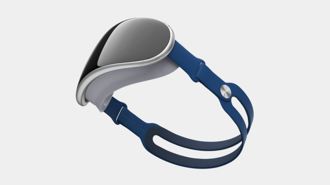

Nhà phân tích Ming-chi Kuo cho biết kính thực tế ảo là sản phẩm phức tạp nhất của Apple và sẽ ra mắt sớm hơn dự đoán trước đó.
Đây không phải lần đầu chuyên gia của hãng TF International Securities đề cập thời gian công bố kính thực tế ảo này. Trước đó, ông Kuo nói Apple Glass sẽ ra mắt trong quý II/2023 nhưng hiện cho rằng sản phẩm sẽ trình làng sớm hơn, ngay trong tháng 1 năm tới.
Việc thay đổi thời gian cũng trùng hợp với hàng loạt báo cáo liên quan đến sản phẩm này gần đây. Đầu tiên là thông tin ban lãnh đạo Apple đã trải nghiệm sản phẩm vào đầu tháng 5. Hệ điều hành RealityOS cũng được đăng ký nhãn hiệu. Tuần trước, Tim Cook, CEO của Apple, cũng khẳng định "rất hào hứng với thiết bị AR và VR" và "sẽ đem đến cho các bạn những điều mới mẻ".
Theo Kuo, Apple Glass là sản phẩm phức tạp nhất mà Apple từng thiết kế. Thiết bị có thể hoạt động độc lập thay vì phải kết nối với PC, điện thoại. Kính sẽ kết hợp ba màn hình hiển thị khác nhau, gồm hai màn hình MicroLED và một màn hình AMOLED, tích hợp chip xử lý M1 hoặc có sức mạnh tương đương.